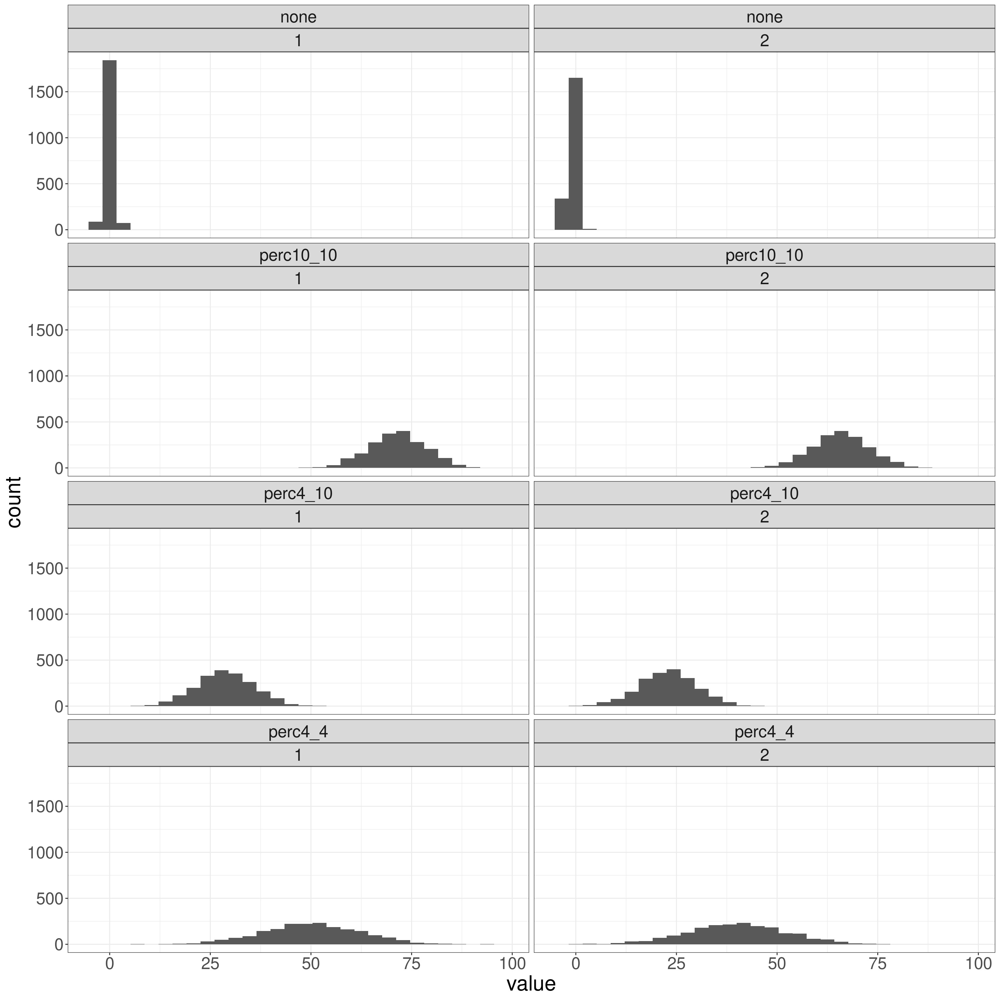
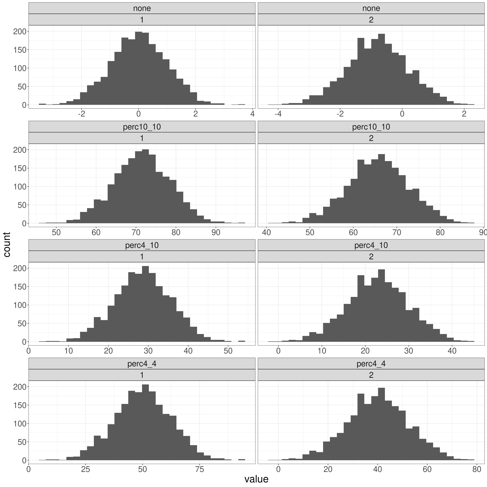
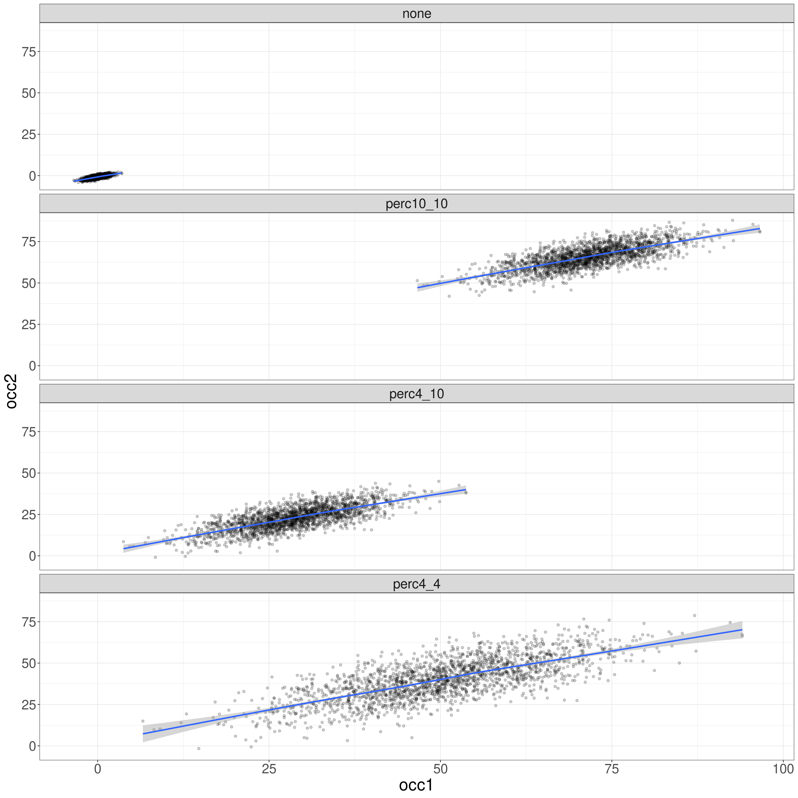
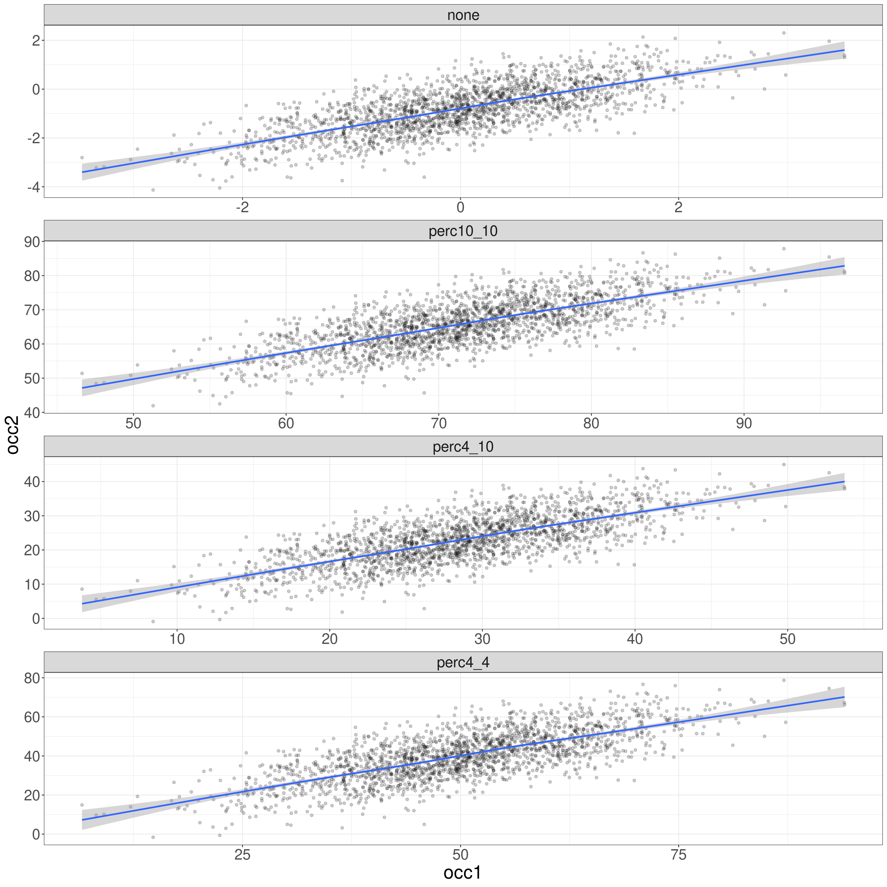
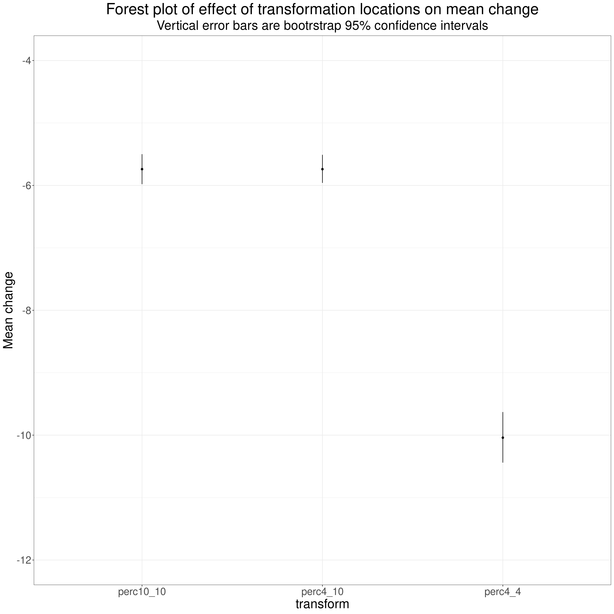

This explains why this transform can be misleading.
This came about after I was contacted by someone using CORE measures but finding that the wider organisation she works in has services using multiple different changes measures and “standardising” scores using the a transform which is
\[transformedScore = 100 * \frac{(rawScore - worstPossScore)}{(bestPossScore - worstPossScore)}\]
On the face of it this sounds like a very attractive way to handle scores, and score changes, where data comes from a number of different scales or measures which may have very different scoring. It even does away with the problem that some have positive scores indicating less good states of health while others have scores indicating levels of well-being.
However, my contact was, I think completely correctly, concerned that this was misleadingly neat and assumes that these “bestPossScore” and “worstPossScore” are based on the same “best” and “worst” states. That might be achievable for some ability tests, they might correctly map from zero being getting no answers correct, to some maximum possible score indicating all answers were correct and the measure, as in some educational testing, might have been chosen so that getting all correct on the one scale really was marking pretty much the same ability as getting all correct on the other scale.
This simply isn’t the case for any conceivable self-report mental health or well-being scale, though I think some of the methods used to get utility scores for quality of life measures such as the EQ-5D-5L arguably use mappings from data from referential datasets in different countries to try to ensure that, when rescaled using these mappings, data from the EQ-5D-5L from the UK rescaled using UK referential data can be argued to map to utility values from data collected in, say, Ecuador, if the mappings based on previous Ecuador data are used for that score-to-utility mapping. I think very few measures have used these methods and make such claims to have been correctly “anchored” to worst possible and best possible states.
The rest of this post shows, using simulated data, that mean transformed score changes are rather different when the transform uses different possible best and worst scores. That use of essentially arbitrary limits on possible score changes is the reality when we map across any widely used MH/WB change measures: some like the CORE measures, have one limit at zero based on scoring the items 0, 1, 2, 3, 4. However, other measures start from k, where k is the number of items in the measure because they are scoring the items 1, 2, 3, 4, 5. Another issue comes in because the number of levels in the items varies, many measures use binary responses, the Crown-Crisp Experiential Index (CCEI) is pretty unusual in alternating binary and three level response to the items (the idea was to minimise the set some of us have to avoid using the extreme answers). Essentially, possible score ranges are arbitrary and it’s perfectly sensible for a measure or scale to be “tuned” very differently from another. For example, the risk items on the CORE-OM are deliberately tuned “high” i.e. to only get non-zero responses for moderately severe risk because they were designed so they could be used by clinicians as “red flags” not simply as additive contributions to a score.
The simulation that follows shows that the impacts of the limits of the possible range really do change mean change scores on the measure even when the underlying data are the same, just transformed differently.
percTransform <- function(vec, minPoss, maxPoss){
100 * (vec - minPoss) / (maxPoss - minPoss)
}
# percTransform(20, 0, 27)
# percTransform(20, 27, 0)
set.seed(12345) # get replicable results
n <- 2000
valCorr <- .7
matCov <- matrix(c(1, valCorr, valCorr, 1), byrow = TRUE, ncol = 2)
vecMeans <- c(0, -.8)
MASS::mvrnorm(n = n, mu = vecMeans, Sigma = matCov) %>%
as_tibble(.name_repair = "universal") %>%
rename(scores1 = `...1`,
scores2 = `...2`) %>%
mutate(ID = row_number(),
percScores4_4_1 = percTransform(scores1, -4, 4),
percScores4_4_2 = percTransform(scores2, -4, 4),
percScores10_10_1 = percTransform(scores1, -10, 4),
percScores10_10_2 = percTransform(scores2, -10, 4),
percScores4_10_1 = percTransform(scores1, -4, 10),
percScores4_10_2 = percTransform(scores2, -4, 10)) %>%
select(ID, everything()) -> tibDat
### pivot so I can facet by the transform
tibDat %>%
pivot_longer(cols = scores1 : percScores4_10_2) %>%
mutate(transform = if_else(name %in% c("scores1", "scores2"), "none", NA_character_),
transform = if_else(str_detect(name, fixed("4_4")), "perc4_4", transform),
transform = if_else(str_detect(name, fixed("4_10")), "perc4_10", transform),
transform = if_else(str_detect(name, fixed("10_10")), "perc10_10", transform),
occasion = str_sub(name, start = -1)) -> tibLongDat1
### now pivot back to get two variables for first and second occasion
tibLongDat1 %>%
pivot_wider(id_cols = c(ID, transform), names_from = occasion, names_prefix = "occ", values_from = value) %>%
mutate(change = occ2 - occ1) -> tibLongDatI generated some data with n = 2000. I made it Gaussian data to keep things computationally simple but the issues are the same for any distributions. I have generated data from a standard Gaussian distribution, i.e. mean zero and SD of 1.0. I did this for t1 and t2 setting the correlation between the two scores to 0.7 and the mean shift to -0.8. Given that the SD is set to 1.0 this is a population effect size of .3.
The summary statistics for the two scores are as follows.
### note to self: I'm sure there's a nicer way to do this!
tibDat %>%
select(scores1, scores2) %>%
mutate(change = scores2 - scores1) %>%
summarise(across(everything(),
list(min = min,
mean = mean,
median = median,
max = max,
SD = sd))) %>%
pivot_longer(cols = everything(),
names_to = "statistic") %>%
mutate(statistic = str_remove(statistic, fixed("scores")),
occasion = "change",
occasion1 = str_sub(statistic, 1, 1),
occasion = if_else(occasion1 == "c", "change", occasion1)) %>%
mutate(statistic = str_remove(statistic, occasion),
statistic = str_remove(statistic, fixed("_"))) %>%
select(-occasion1) %>%
pivot_wider(id_cols = statistic, values_from = value, names_from = occasion, names_prefix = "occ") %>%
rename(change = occchange) %>%
flextable() %>%
colformat_double(digits = 3)statistic | occ1 | occ2 | change |
|---|---|---|---|
min | -3.472 | -4.129 | -3.401 |
mean | 0.009 | -0.795 | -0.804 |
median | 0.010 | -0.785 | -0.813 |
max | 3.522 | 2.299 | 1.336 |
SD | 0.999 | 0.995 | 0.739 |
Then I created the following transforms of the data:
perc4_4”: a percentile transform using a minimum possible score of -4 and a maximum possible score of 4, so centred on (population) mean of the dataThis facetted histogram plot shows what the transforms have done to the distributions (using fixed x axis ranges so the effect of the transforms is blatant).
ggplot(data = tibLongDat1,
aes(x = value)) +
facet_wrap(facets = vars(transform, occasion),
ncol = 2,
scales = "fixed") +
geom_histogram()
And this, using free x scaling, shows that the shapes are, of course, exactly the same, just rescaled.
ggplot(data = tibLongDat1,
aes(x = value)) +
facet_wrap(facets = vars(transform, occasion),
ncol = 2,
scales = "free_x") +
geom_histogram()
This is the scattergram mapping the second occasion scores against the first and adding a linear best fit.
ggplot(data = tibLongDat,
aes(x = occ1, y = occ2)) +
facet_wrap(facets = vars(transform),
ncol = 1,
scales = "fixed") +
geom_point(alpha = .2) +
geom_smooth()
The same with free axes showing that the scatter and regression slopes are the same across the transformations.
ggplot(data = tibLongDat,
aes(x = occ1, y = occ2)) +
facet_wrap(facets = vars(transform),
ncol = 1,
scales = "free") +
geom_point(alpha = .2) +
geom_smooth()
All exactly the same after the rescaling, as are the correlations, shown here.
transform | corr |
|---|---|
none | 0.725 |
perc10_10 | 0.725 |
perc4_10 | 0.725 |
perc4_4 | 0.725 |
Of course, the linear regression intercepts, but not the slopes, are affected by the transforms as shown here.
tibLongDat %>%
group_by(transform) %>%
summarise(regr = list(lm(occ2 ~ occ1))) %>%
ungroup() %>%
mutate(tidy = map(regr, broom::tidy)) %>%
unnest(tidy) %>%
select(-regr) %>%
flextable() %>%
colformat_double(digits = 2) %>%
bg(i = c(1, 3, 5, 7),
bg = "red") %>%
bg(i = c(1, 3, 5, 7) + 1,
bg = "green")transform | term | estimate | std.error | statistic | p.value |
|---|---|---|---|---|---|
none | (Intercept) | -0.80 | 0.02 | -52.25 | 0.00 |
none | occ1 | 0.72 | 0.02 | 47.03 | 0.00 |
perc10_10 | (Intercept) | 14.12 | 1.10 | 12.80 | 0.00 |
perc10_10 | occ1 | 0.72 | 0.02 | 47.03 | 0.00 |
perc4_10 | (Intercept) | 2.22 | 0.45 | 4.89 | 0.00 |
perc4_10 | occ1 | 0.72 | 0.02 | 47.03 | 0.00 |
perc4_4 | (Intercept) | 3.88 | 0.79 | 4.89 | 0.00 |
perc4_4 | occ1 | 0.72 | 0.02 | 47.03 | 0.00 |
If I tabulate the change summary statistics by transform we can see that the different anchors change the mean change quite markedly so the transform is not a good way of standardising things to compare them across measures as measures can rightly be designed to have markedly different locations of any particular population’s distributions.
tibLongDat %>%
group_by(transform) %>%
summarise(minChange = min(change),
meanChange = list(getBootCImean(change)),
maxChange = max(change)) %>%
unnest_wider(meanChange) %>%
mutate(across(where(is.double), ~ sprintf("%5.2f", .x))) %>%
mutate(CI = str_c(LCLmean, " to ", UCLmean)) %>%
rename(mean = obsmean,
min = minChange,
max = maxChange) -> tmpTib
tmpTib %>%
select(transform, mean, CI, min, max) %>%
flextable() %>%
autofit() %>%
align(i = 1,
j = 2:5,
align = "center",
part = "header") %>%
align(i = 1:4,
j = 2:5,
align = c("right", "center", "right", "right")) %>%
bg(i = 1,
bg = "grey")transform | mean | CI | min | max |
|---|---|---|---|---|
none | -0.80 | -0.84 to -0.77 | -3.40 | 1.34 |
perc10_10 | -5.74 | -5.98 to -5.50 | -24.29 | 9.54 |
perc4_10 | -5.74 | -5.96 to -5.51 | -24.29 | 9.54 |
perc4_4 | -10.04 | -10.44 to -9.63 | -42.51 | 16.70 |
The mean change for the transformed data is maximal when the minimum and maximum possible scores leave the transformed data pretty nicely located around 50 but as you move the limits the mean change drops despite the real change effect between exactly the same.
This plots the transformed mean change data as a forest plot.
tmpTib %>%
filter(transform != "none") %>%
select(transform, min, max, ends_with("mean")) %>%
mutate(across(min:UCLmean, as.numeric)) -> tmpTib2
ggplot(data = tmpTib2,
aes(x = transform, y = mean)) +
geom_point() +
geom_linerange(aes(ymin = LCLmean, ymax = UCLmean)) +
ylim(c(-12, -4)) +
ylab("Mean change") +
ggtitle("Forest plot of effect of transformation locations on mean change",
subtitle = "Vertical error bars are bootrstrap 95% confidence intervals")
Those are not trivial differences created just by having different bounds on the possible scores and it’s clear that the differences are highly statistically significant. This next table confirms that, of course, the effect size of the change is not affected by the transform.
This transform, attractive though it first sounds, is likely to substantially distort relationships between change on measures with different best and worst possible scores.
26/06/2024 at 19:38Text and figures are licensed under Creative Commons Attribution CC BY-SA 4.0. The figures that have been reused from other sources don't fall under this license and can be recognized by a note in their caption: "Figure from ...".